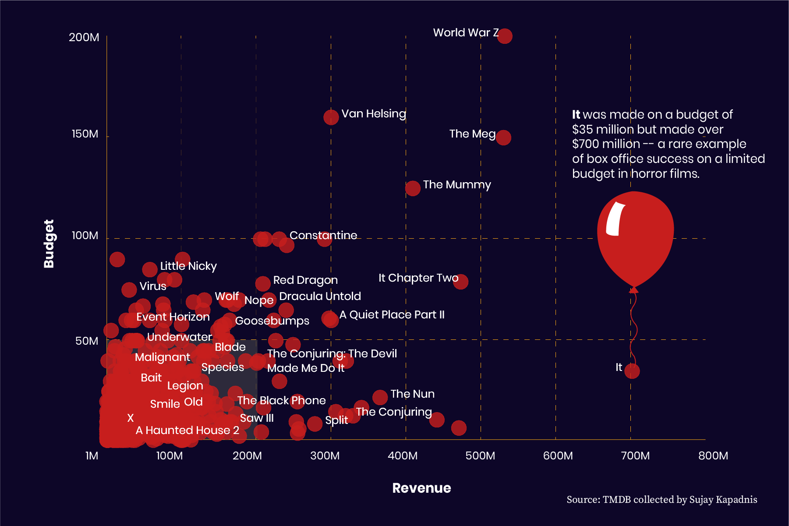
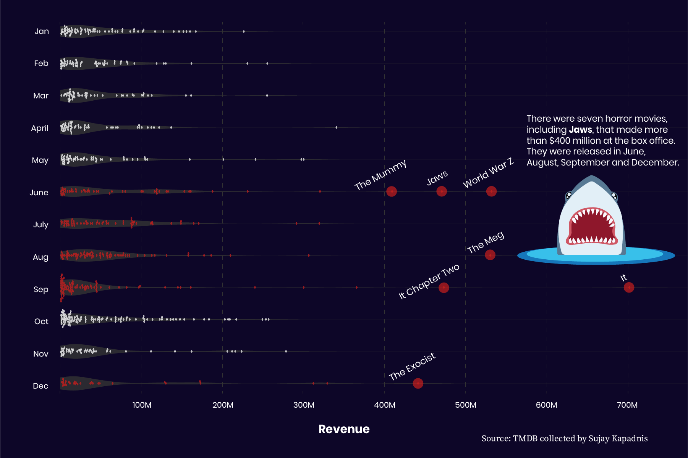
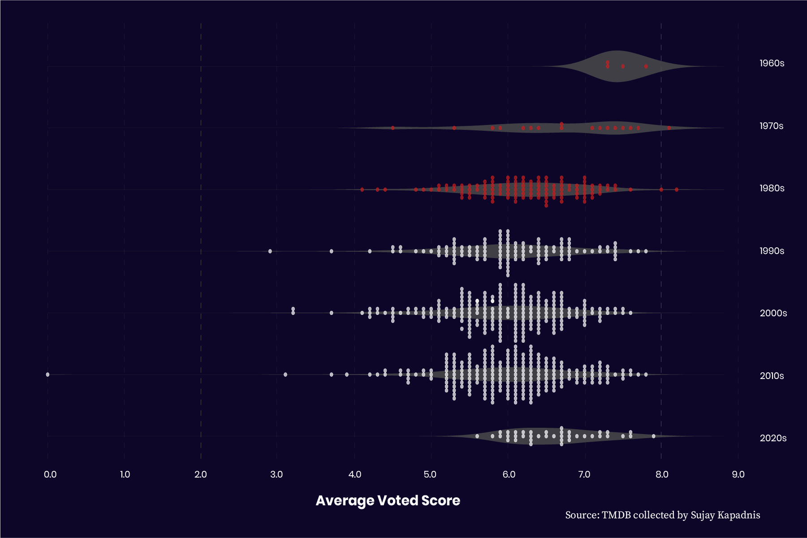

Data Shows Five Fun Facts
about Horror Movies
By Molecule Jongwilai
October is a huge time for horror movies. From 2020 to 2022, almost a thousand horror movies were released in October, while the average number of horror films released monthly was around 470, according to data set from The Movie Database (TMDB) website.
Capital News Service analyzed horror movie data from TMDB and found five interesting facts about these spooky films that help us understand them a little better.
1. January turns out to be a more popular month for horror movies than October.
Of the 32,540 horror movies released between 1950 and 2022, TMDB data show that January was the top choice for film studios to release them, with almost 5,600 films coming out that month, above the average number of 2,700 monthly released films. Surprisingly, October was in second place for horror films' release with almost 4,900 movies.

2. It’s quite hard for a horror movie to become a box office hit.
We narrowed it down to 721 horror films that were produced by and made at least $1 million. Data show that most horror movies were made with budget under $50 million and rarely earned more than $200 million.
A few horror movies with more than $100 million in cost, like World War Z, The Meg or The Mummy, managed to become a blockbuster hit that gained over $400 million, while a rare case like It could make more than $700 million from only a $35 million budget.

3. Like films in most genres, summer and Christmas are the best times for horror films to make money.
It is uncommon for horror films to earn more than $300 million at the box office. However, most that accomplished this milestone, including Jaws, It Chapter Two or The Exorcist, were released between June and September or in December.

4. 60s through 80s horror movies tended to receive higher ratings from the audience.
According to the TMDB’s average voted scores, most horror movies were rated between 5.0 and 7.0. Nonetheless, those released between 1960 and 1989 tended to receive better scores than films from other decades in overview.

5. Budget and runtime do not determine a good horror movie.
TMDB data show that the movie’s budget and duration do not correlate with its audience score. Almost every horror movie was rated between 4.0 and 8.0, and this range included movies with a low budget, to those with more than $100 million production, and films that run from only an hour to almost three hours.
So far, 2025 has also been a strong year for horror movies. Box office successes like The Conjuring: Last Rites and Final Destination Bloodlines made over $300 million with a budget of around $50 million. There have also been several critically acclaimed films, including Sinners, Companion and Weapon, with an above 90% Rotten Tomatoes score which may be worth adding to the Letterboxd watchlist this Halloween.
By Molecule Jongwilai | Capital News Service